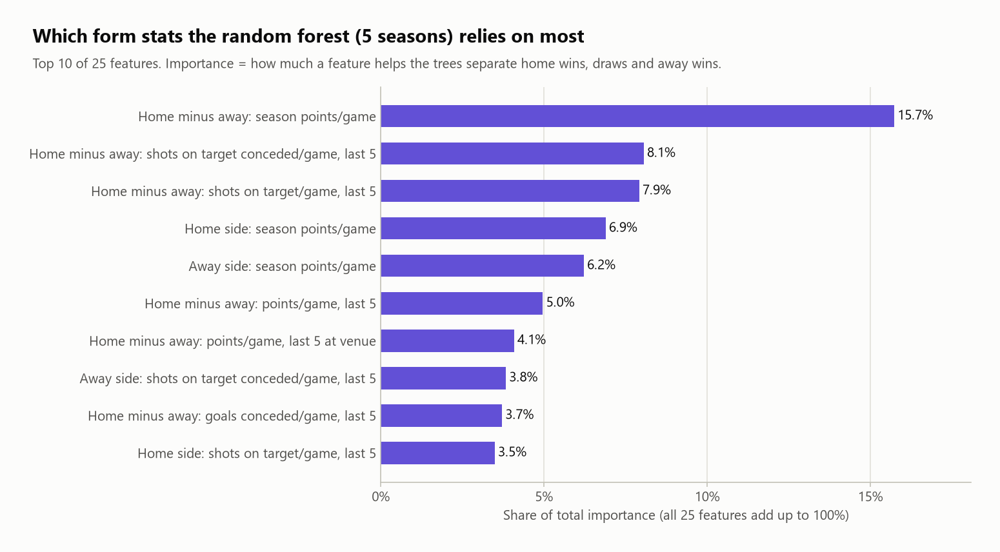
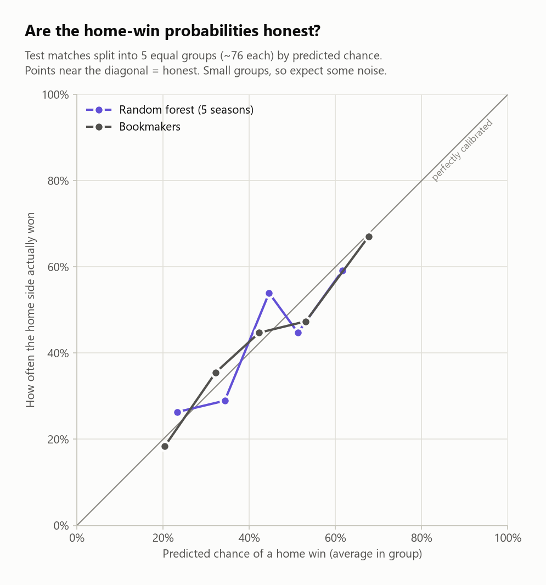
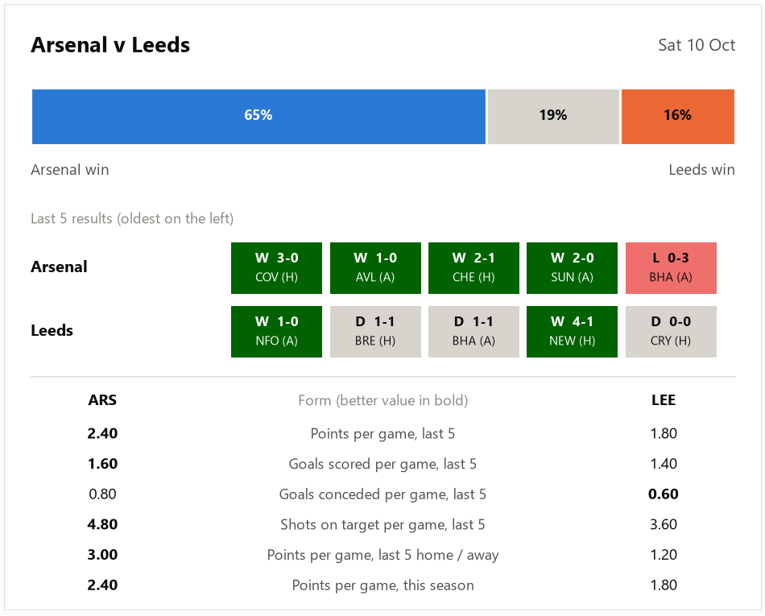

How it works
- Data: seven seasons of match data (2020/21 to the current season), loaded, cleaned and sorted automatically.
- Feature engineering: each team's form over its previous 5 games (points, goals, shots on target, home and away form) plus season points per game. These are combined into 25 home, away and "home minus away" features.
- No peeking at the answer: two automated checks run every time to prove no match is predicted using its own result (data leakage). Newly promoted teams get cautious "below average" values, worked out from training data only.
- Models: logistic regression and a random forest, trained strictly in time order and scored on a full held-out season. They're compared against two baselines: "always pick the home team" and the bookmakers' odds.
Results
The best model, a random forest trained on five seasons, matched the bookmakers' 49.5% accuracy and beat both simple baselines. Its probabilities (log loss) aren't quite as sharp as the bookmakers', which isn't surprising: their odds include team news and line-ups, while my model only sees form.

I also tested whether more data really helps, using a bootstrap check (2,000 resamples). Five seasons gave logistic regression a real improvement over one season. For the random forest, the difference was within the range of luck.


Live predictions
Each week the model is retrained on every completed match and predicts the next round. It produces a form guide and a preview card for every fixture, and logs each prediction so its track record builds up against the real results and the bookmakers.

What I'd take into my next project
- Benchmark against something strong. Beating "always home win" is easy. The bookmakers are a far more honest measure.
- Guard against leakage first. A model that accidentally sees the answer looks brilliant and is useless. Automated checks catch this every run.
- Judge on hundreds of games, not one weekend. Football is noisy, so I rate the probabilities (log loss) over a full season rather than headline accuracy over a few matches.
Next steps: add expected-goals (xG) data as features, and retrain after every matchday instead of once per season.